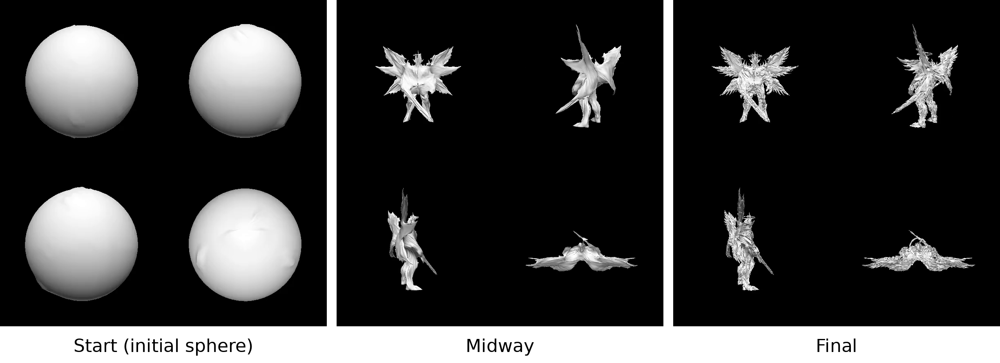

15-418/618 Final Project · Fall 2026
Parallel Differentiable Mesh Rasterization for Multi-View Shape Optimization
- Project Proposal (PDF)
- Milestone Report · Nov 23
- Final Report · Dec 10
Summary
The idea is to implement an optimized parallel differentiable mesh and texture rasterizer for multi-view image input. First, creating a sequential baseline in C++, and then an optimized CUDA C++ GPU rasterizer to further analyze the forward and backward passes, subdivision, Laplacian smoothing, fused kernels, multi-GPU & single-GPU batching, and a CUDA Graphs implementation in terms of execution time, throughput, and memory bandwidth. Single-GPU performance will be measured on the GHC machines, and for multi-GPU experiments I will use my lab’s server with 8× NVIDIA RTX A4000 GPUs.
Optimization
